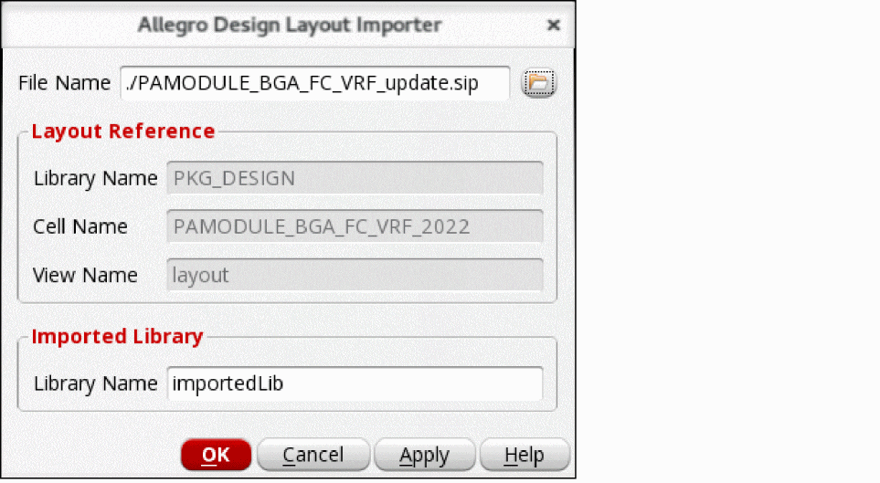
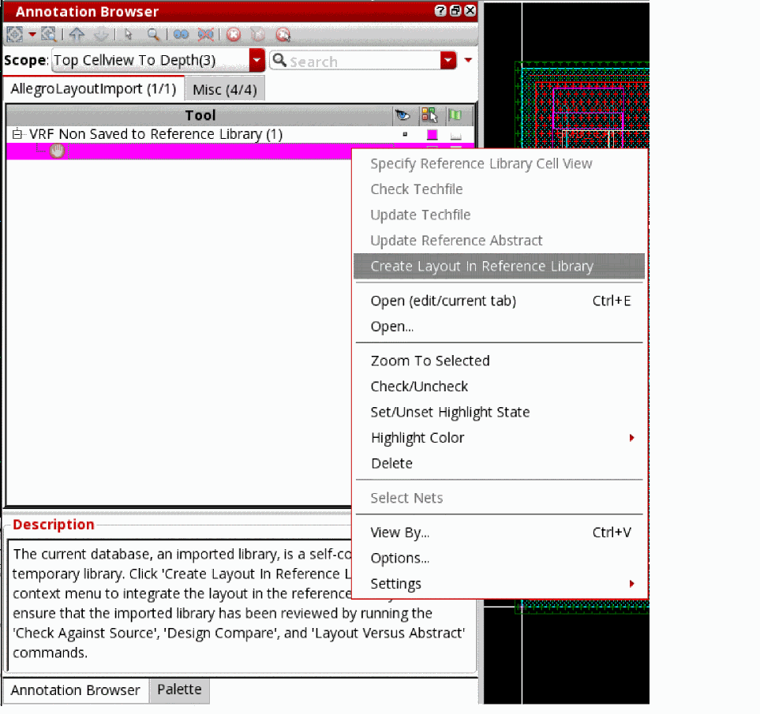
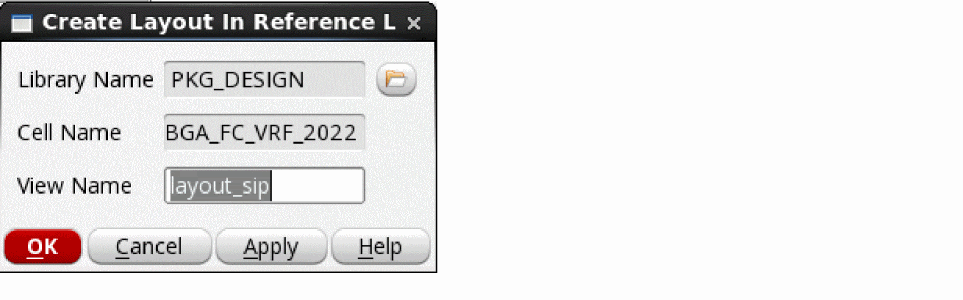

Updating a Virtuoso Layout From a SiP File
When a new version of an existing design is provided as a SiP file, it is important to compare the changes with the existing database in the Virtuoso RF Solution. The assisted import flow creates a temporary and self-contained database from this new SiP file, which allows you to run several checks for identifying the changes. Once all the modifications are reviewed and agreed, the new version of an existing design can be integrated into the reference Virtuoso RF Solution database.
To update a Virtuoso layout from a SiP file:
-
Click Module – Assisted Flow – Import Design Update.
The Allegro Design Layout Importer Form opens.
 - Specify the SiP file that needs to be synchronized with the Virtuoso package layout.
- Specify a name for the temporary library that will be created to review the layout against the SiP file. You can perform check against source, layout versus abstract check, and other checks, such as DRC, in the imported library.
- Click OK.
-
Review the modifications required in the reference database due to the updated SiP file by using the following checks:
- Check against source to evaluate the consistency with the reference schematic.
- Check that if abstracts are in sync with the corresponding IC layouts using Module – Layout Vs. Abstract.
- Run Module – Assisted Flow – Compare with Reference Design to compare the placement and routing of the temporary database against the reference database. The markers are created on the Misc tab of the Annotation Browser.
-
Check the Annotation Browser markers on the AllegroLayoutImport tab. The technology file differences, such as new layers, new purposes, or new vias are displayed on this tab. Use the shortcut menu to update the technology file.
If there are new layer-purpose pairs found, the reference technology file is updated. However, if the new layer is part of the metal stack, such asMetal2orMetal3, the technology file is not updated. - Any pin modifications, such as a bump move, are also displayed on the AllegroLayoutImport tab. Use the shortcut menu to update the reference abstract. To ignore these modifications, omit this step.
-
Once the design is reviewed, right-click the
VRF Non Saved to Reference Librarymarker and click Create Layout in Reference Library on the AllegroLayoutImport tab.
 -
Specify the new view name.
 - Click OK. The database is integrated into the reference library as a new view.
- Close or delete the temporary library.
Related Topics
Virtuoso Layout to SiP with Assisted Export
Allegro Design Layout Importer Form
Return to top